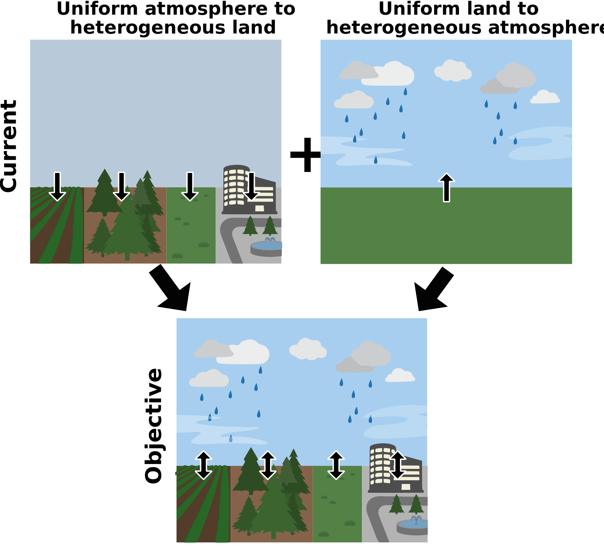

In existing climate models, simulated sub-grid heterogeneous states and fluxes over land are mostly disconnected from sub-grid parameterizations of the atmosphere. This is a recognized deficiency given the known role of multi-scale land heterogeneity in atmospheric processes including convection, rainfall initiation, and mesoscale circulations.
